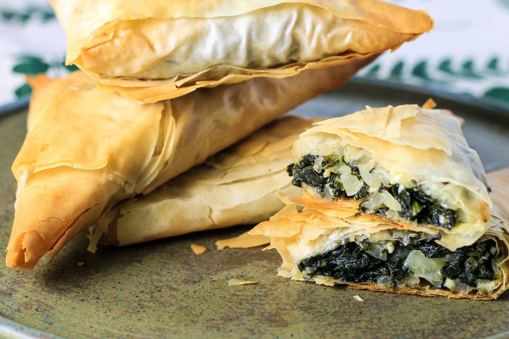

Description:
Spanakopita is a Greek spinach pie consisting of a buttery, flaky phyllo pastry with a filling of cooked spinach,
lemon juice, feta cheese, and sometimes dill. It can be served either as a small snack, an appetizer,
or a light main course. Due to a farming tradition of handheld foods, the pies were originally
invented for the field workers who would carry them in their pockets and consume them while working.
Although spanakopita has humble beginnings, it has risen to greater gastronomic heights, so today it can be
found in most Greek diners, taverns, and upscale restaurants. It is likely that the dish originated 400 years
ago, during the Turkish occupation of Greece, since a Turkish dish called ispanaki is almost identical in
presentation.
Ingredients:
- 3 tablespoons olive oil
- 1 large onion, chopped
- 1 bunch green onions, chopped
- 2 cloves garlic, minced
- 2 pounds spinach, rinsed and chopped
- 1/2 cup chopped fresh parsley
- 1 cup crumbled feta cheese
- 1/2 cup ricotta cheese
- 2 large eggs, lightly beaten
- 8 sheets phyllo dough
- 1/2 cup olive oil, or as needed
Steps:
- Gather all ingredients.
- Preheat the oven to 350 degrees F (175 degrees C). Lightly oil a 9-inch square baking pan.
- Heat 3 tablespoons olive oil in a large skillet over medium heat. Saute chopped onion, green onions,
and garlic in the hot oil until soft and lightly browned, about 5 minutes.
- Stir in spinach and parsley, and continue to saute until spinach is limp, about 2 minutes.
Remove from the heat and set aside to cool.
- Mix feta cheese, ricotta cheese, and eggs in a medium bowl until well combined. Stir in spinach
mixture.
- Lay one sheet of phyllo dough in the prepared baking pan, and brush lightly with olive oil.
Lay another sheet of phyllo dough on top and brush with olive oil. Repeat the process with two more
sheets of phyllo dough; the sheets will overlap the pan.
- Spread spinach and cheese mixture into the pan. Fold any overhanging dough over the filling. Brush with
oil.
- Layer the remaining 4 sheets of phyllo dough, brushing each with oil.
Tuck overhanging dough into the pan to seal the filling.
- Bake in the preheated oven until golden brown, 30 to 40 minutes.
- Cut into squares and serve while hot.